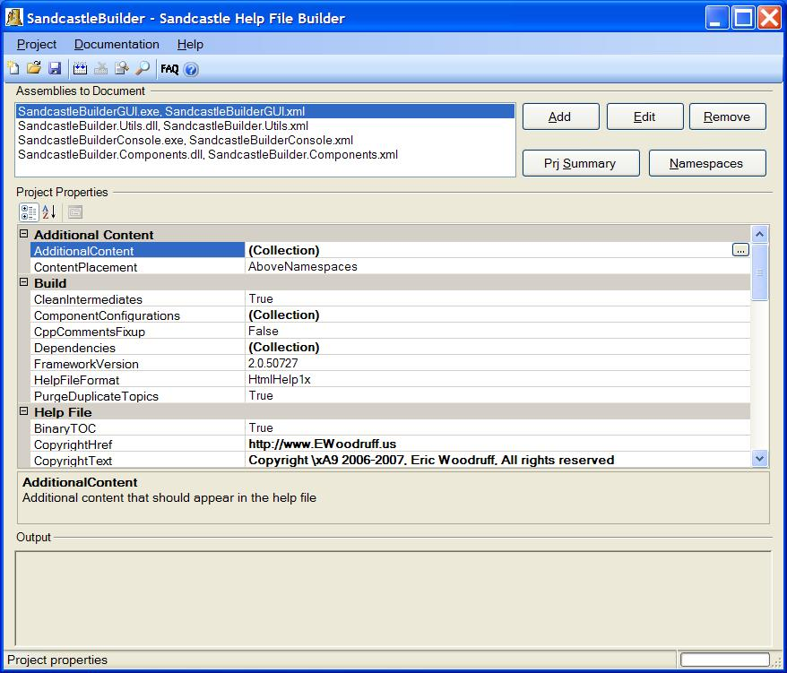

Requirements
In order to use the Sandcastle Help File Builder, you will need the following:
- The .NET 2.0 Framework
- The latest version of Sandcastle (currently the March 2007 CTP). Note
that this is produced by Microsoft. The help file builder uses it to produce
the help file.
- The HTML Help Workshop for building HTML Help 1.x help files
- The HTML 2.x compiler for building HTML Help 2.x help files
See the Links to Resources help topic for
information on how to obtain the above items and for references to other
helpful information.
An Overview of the Help File Builder GUI
When the help file builder is ran, the following window appears. The main
form has intentionally been designed to look and function as much like NDoc
as possible. The toolbar contains most of the common functions. A Save
Project As option, a New Project from NDoc Project option, a
New Project from Visual Studio Project option, and a list of the most
recently opened projects is also available on the Project menu. The
help builder will automatically load the last used project when opened.

The top part of the form contains a list box showing the list of
assemblies that will be documented. The entries display the assembly name
and the XML comments filename. The three buttons to the left of the list
allow you to do the following:
- Click Add to add one or more assemblies to the list. A File
Open dialog box appears in which you can select one or more DLLs,
executables, or XML files associated with the items to document. When
adding a DLL or an executable, if an XML comments file with the same name
is found, it is associated with the assembly automatically. Likewise, if
you select an XML comments file a DLL or executable with a matching name is
associated with it automatically. If the matching file cannot be
determined, it is set to "Unknown" and you can edit the entry to correct
it.
- Click Edit to edit the filenames for the selected entry. A
new dialog box appears that lets you specify the paths to the two files. If
the
CommentsOnly property is set to false (the default), both
files must be specified. If CommentsOnly is set to true, only
the XML comments file is specified. You can use this option to include a
comments file containing project summary and/or namespace settings that are
shared amongst multiple help file builder projects rather than specifying
them in the Project Summary and Namespace Comments options of each project.
See the Shared Settings help
topic for more details.
- Click Remove to remove an entry.
See the Project and
Namespace Summaries topic for information on setting the project and
namespace level summary text and how to limit which namespaces are
documented.
NOTE: Only add assemblies and XML comment files that you want
documented in the top section. Third-party assemblies, interop assemblies,
and other dependent DLLs should be added to the project's
Dependencies property. See the
Dependencies Property help
topic for more information.
The center section of the form contains a property grid that displays
the project options. The options are grouped into several categories and
are listed alphabetically within them. More information on the properties
can be found in The GUI Project
Manager section. The bottom section of the form contains an output
window that will display the messages from the build process. The
View Output in Window option on the Documentation menu will
open a resizable window that can be used to more easily view the build log
output.